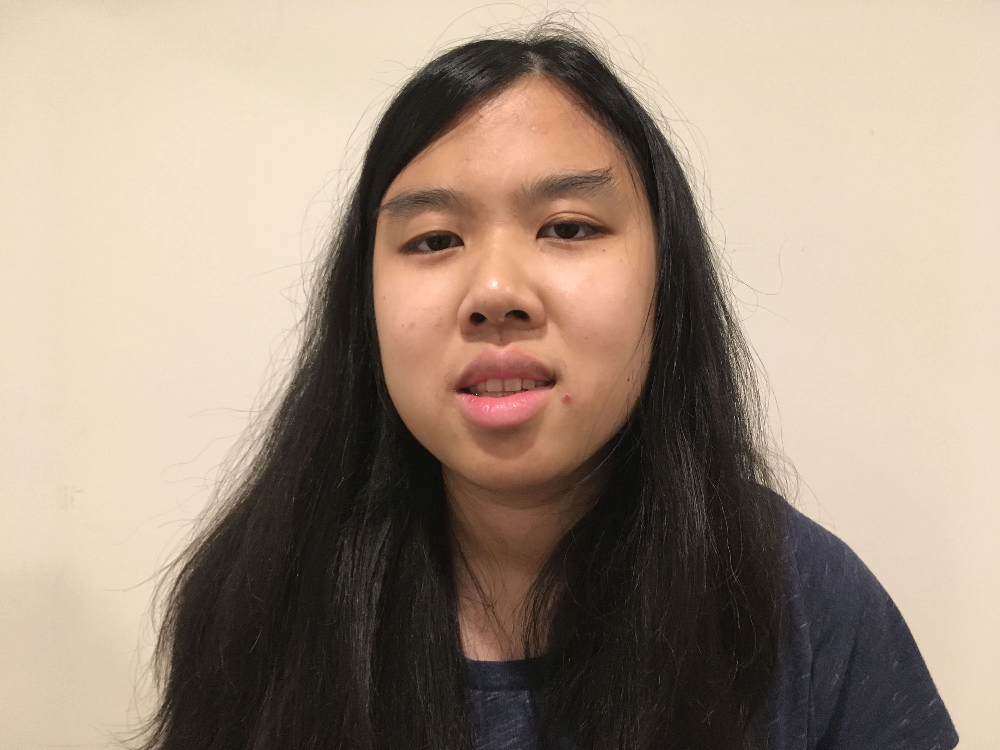

Hello
[American, 1997-] Megan's interest in graphic design began with school yearbook and t-shirt design contests. In addition to making work for them, her other hobbies were writing music and writing stories. For a while, she aspired to be a Young Adult Fiction writer. In high school, she learned Zentangle in a library workshop. Then, she drew it on cards for her friends and family. She took her first official art class in Fall 2016 where she struggled to make blind contour drawings and gesture drawings, but the class connected to her abstract sharpie drawing and self-portrait. She decided not to major in art the first time around because she though it would be too selfish. Then she learned it is okay to follow your dreams and decided to do what makes her happy which is making art. She thinks of highly creative graphic design ideas and tells stories with illustrations and animations.